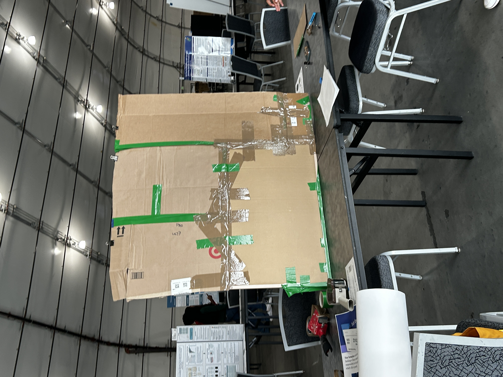
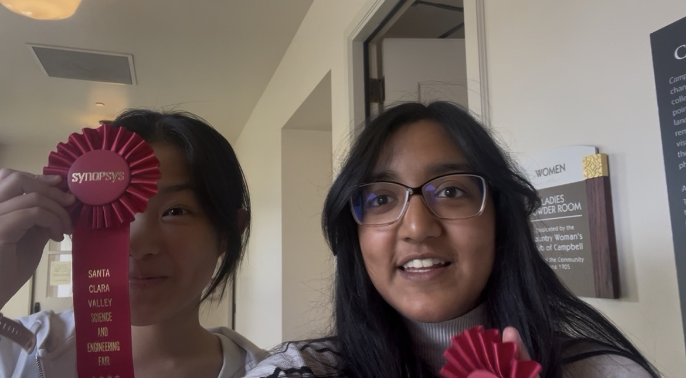
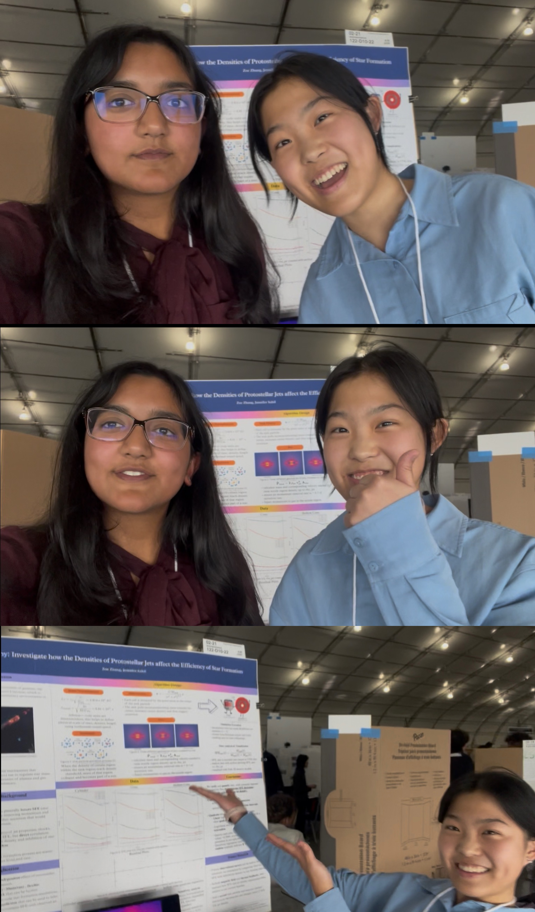

Science Fair
Science begins with a question. A good question deserves to be pursued because it simply advances knowledge about the world(even by just a little bit). But when I finally had this chance to attend science fair, it challenged my naive perspective about science.
It was hard to admit that even in scientific research, we have to market ourselves, and, more importantly, market the value of our questions. A project that promises an immediate, measurable benefit to people, can easily appear more compelling than one driven simply by fundamental curiosity.
For example, before the exhibition even began, the first judgment had already been made. The judges only read our project titles and abstracts to decide which booths were worth visiting. If those few lines failed to catch their attention, they might never see our poster. We could spend months pursuing a question and lose the opportunity to explain it within a few seconds.


Regardless, I'm fortunate to learn these lessons so early. And below are some FUN part at the fair with Jennifer.



Even though we only won 2nd place and didn't qualify to state fair, I'm still very thankful for this experience. I got to know people from different fields, hearing about their story, how they overcome the challenge of lacking resources. I learned oral presentation, poster design, and more importantly——how to make the poster board!!!